一整门课，
带在身边。
在手机上一次下载整门课。坐飞机、坐地铁，没网也能接着听。
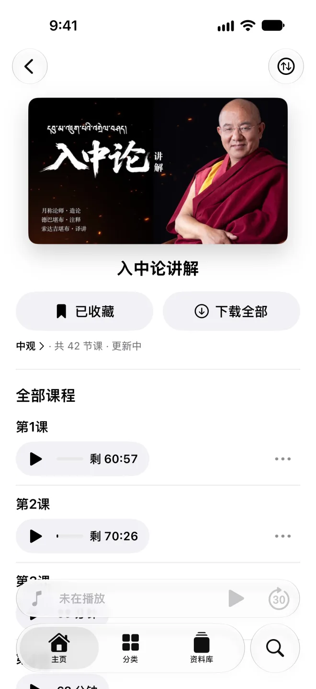
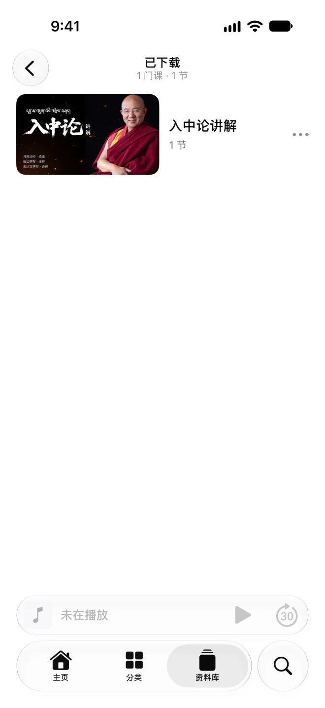
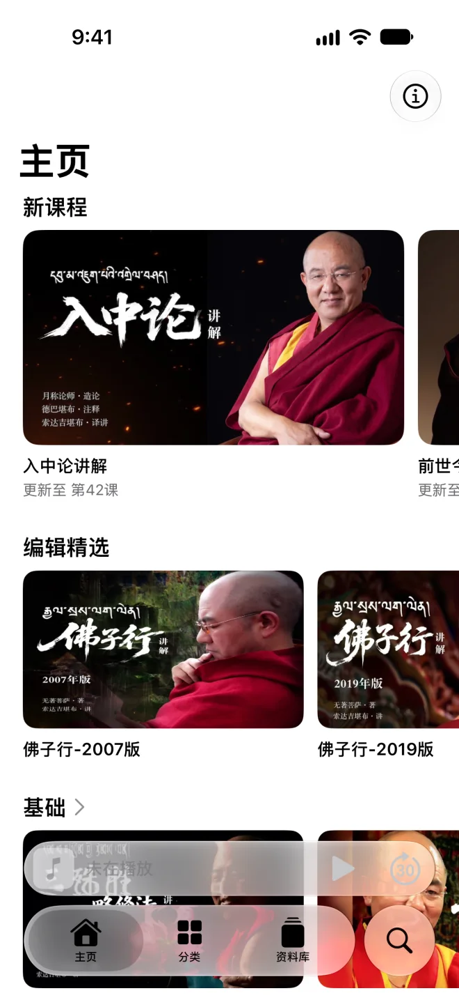
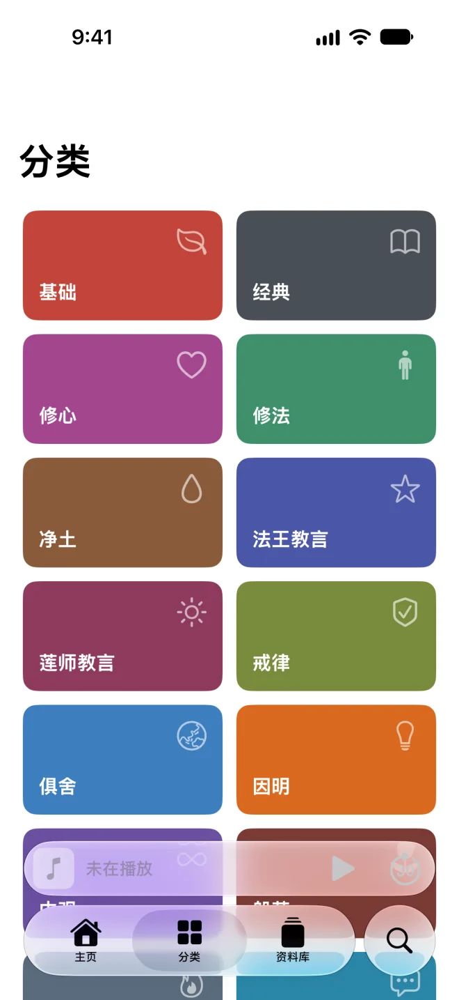
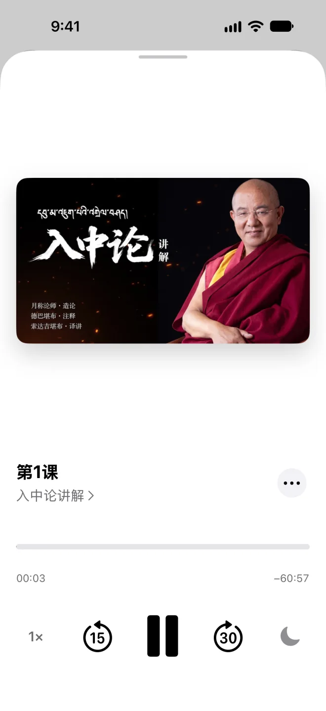
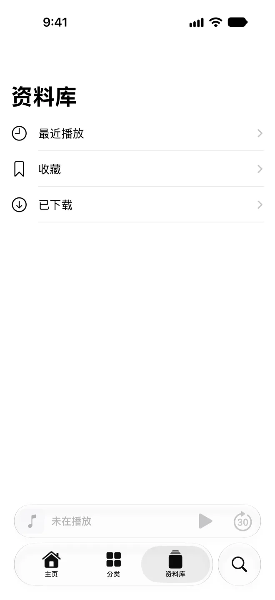
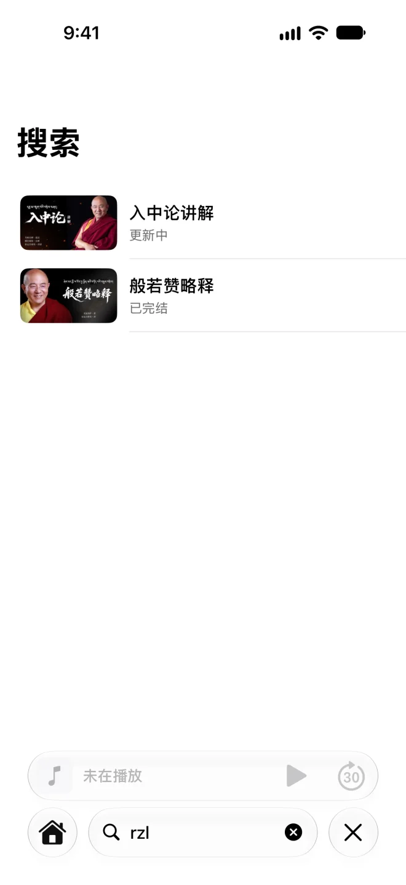
从佛学入门到大圆满。这里有持续更新的新课，也有历年的讲课录音。
在手机上一次下载整门课。坐飞机、坐地铁，没网也能接着听。


播放速度可以调快，也可以调慢。睡前听一集，还能设定播完就停。
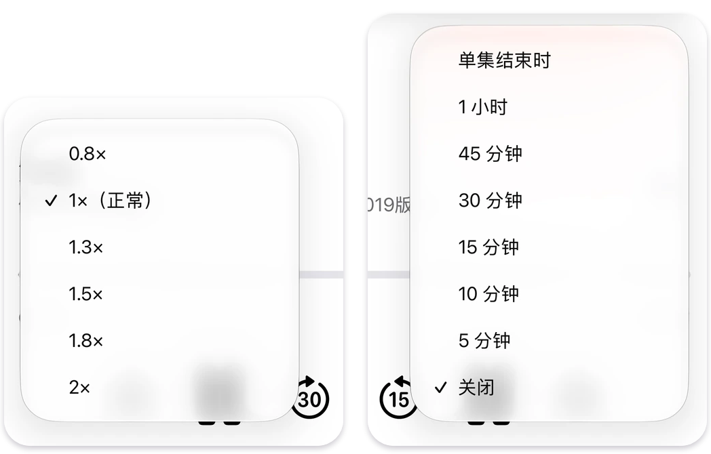
在支持 iCloud 同步的 Apple 设备上，使用同一个 Apple 账户，换一台也能从上次停下的地方继续。
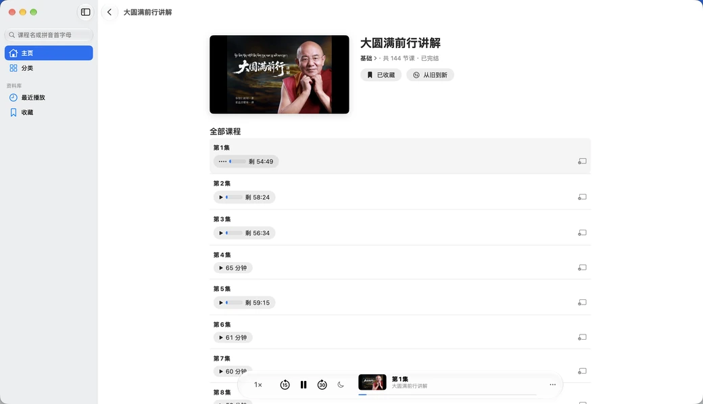
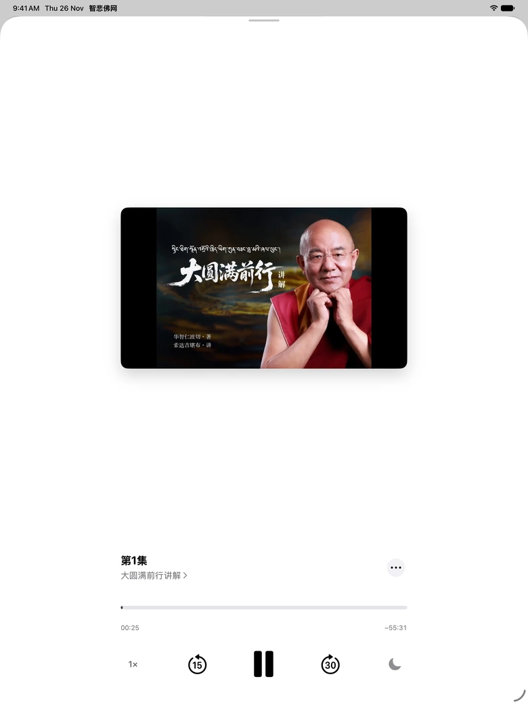
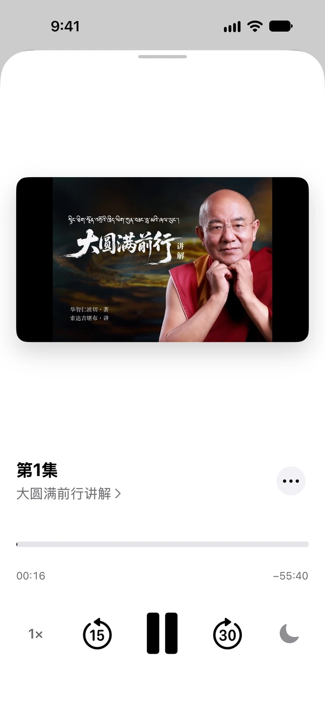
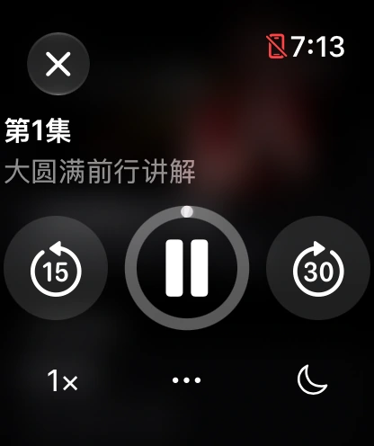
把「继续播放」和「最新课程」小组件放在 iPhone 主屏幕或 Mac 桌面上，随手就能听。
部分下载暂不可用，请稍后重试。
课程免费收听，无广告，也无需注册智悲佛网账号。
在官网下载区点「下载 APK」。如果你是从微信或 QQ 打开网页的，请点右上角「⋯」，选择「在浏览器中打开」，再开始下载。
下载完成后，从浏览器的「下载内容」或手机的「文件管理」打开安装包。如果系统提示需要授权，点「设置」，给当前打开安装包的浏览器或文件管理器开启「允许来自此来源的应用」，再返回安装。
如果看到「已了解应用的风险检测结果」，确认安装包来自智悲佛网官网后，按屏幕提示点「继续安装」。
部分华为手机或平板会提示「纯净模式持续保护中」。如果设备提供「增强防护」开关，可在「设置 → 系统和更新 → 纯净模式」里暂时关闭增强防护，安装完成后再开启。也可以直接打开网页版听课。
会。在支持 iCloud 同步的 Apple 设备上，使用同一个 Apple 账户，收藏或取消收藏都会同步。
会。用同一个 Apple 账户在支持 iCloud 同步的设备上听课，另一台设备的「最近播放」里也能找到这一集。
可以。在支持 iCloud 同步的 Apple 设备上使用同一个 Apple 账户，打开同一集，就能从上次停下的位置接着听。已听完的标记也会同步。
不能。同步仅限使用同一个 Apple 账户、且支持 iCloud 同步的 Apple 设备。Android 和 Windows 各自在本机保存收藏、最近播放和收听进度。
可以在支持下载的设备上提前下载课程。断网后，打开资料库的「已下载」就能听。